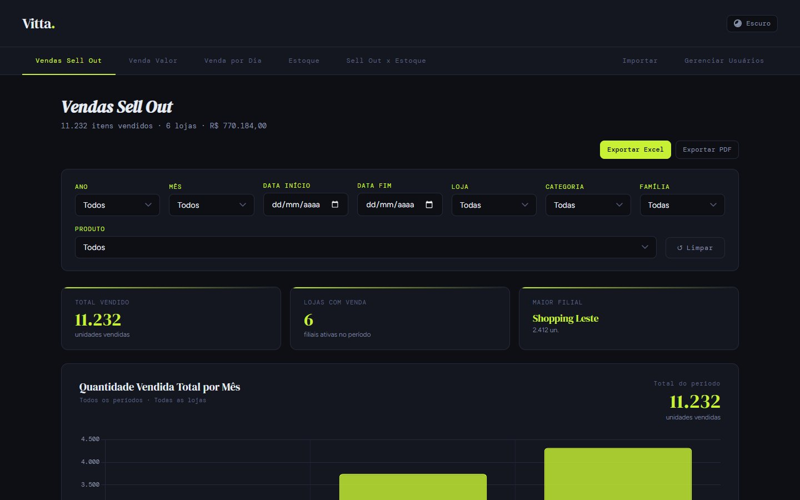
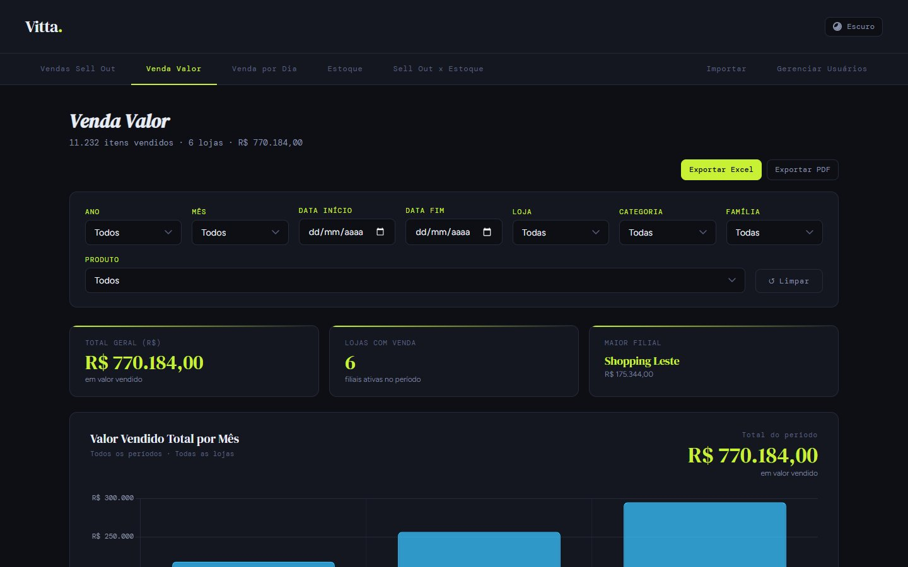
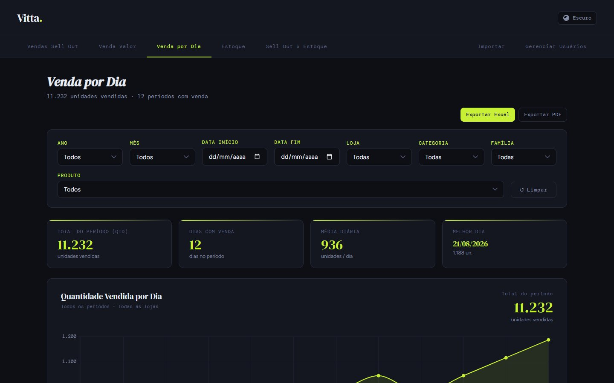
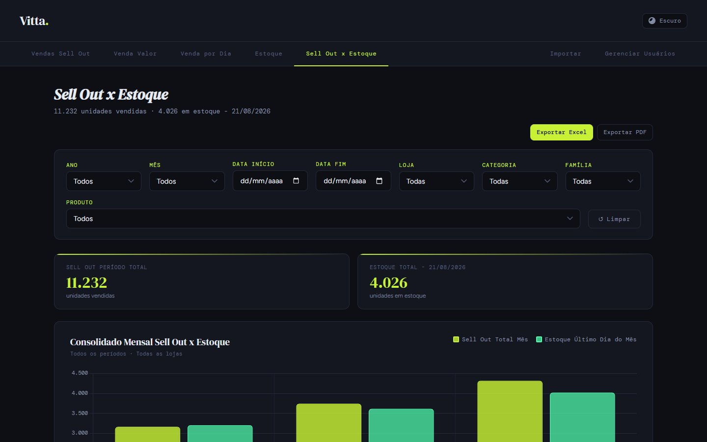
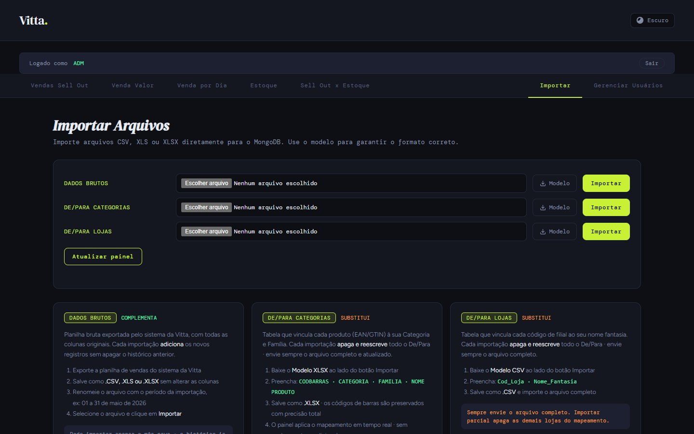

Do Excel dinâmico ao painel de sell out.
Um painel web que substituiu as planilhas dinâmicas usadas pela diretoria comercial para acompanhar as vendas, o valor vendido e o estoque de uma rede varejista cliente, loja a loja e produto a produto. Importação controlada, tratamento automático na entrada e indicadores que respondem a qualquer filtro.

Todo mês, a mesma planilha, refeita do zero.
A rede varejista envia a extração do seu sistema com a venda e o estoque de cada loja e produto. Para responder às perguntas da diretoria comercial, a análise era montada em planilhas dinâmicas de Excel: arquivos pesados, uma versão por pessoa e o mesmo trabalho manual a cada fechamento.
Quanto vendemos, em que loja, de qual categoria e o estoque acompanha a venda? Tudo isso sem abrir uma planilha.
Quantidade e valor
Unidades vendidas e valor vendido por mês, dia, loja, categoria, família e produto.
Posição e evolução
Estoque do último dia de cada mês, maiores e menores estoques e histórico diário por loja.
Frontend mostra. Backend processa. Mongo guarda.
A arquitetura cabe numa frase, e quatro regras guiaram todas as decisões:
A importação é a parte mais importante
Todo dado entra pronto para consulta: números convertidos, datas padronizadas, categoria e família já gravadas. O painel nunca descobre nada na hora de exibir.
Toda importação pode ser desfeita
Cada linha leva o identificador do lote. Desfazer apaga exatamente aquele lote, registra no histórico e limpa o cache.
Nenhum número antigo na tela
Importar, desfazer ou limpar invalida o cache. O Mongo certo com o painel desatualizado é um erro tão grave quanto o dado errado.
Acesso por papéis
O usuário principal não pode ser excluído nem ter a senha trocada pelo painel. Administradores gerenciam usuários, e limpezas críticas pedem a senha principal.
Três arquivos, três comportamentos.
Cada base tem uma regra de entrada diferente, e essa diferença precisa ser explícita para quem importa. A tela de importação explica cada uma e oferece um modelo para baixar.
| Base | Formato | Colunas | Ao importar | Armadilha encontrada |
|---|---|---|---|---|
| Dados brutos | CSV, XLS ou XLSX | Data Loja GTIN/PLU Produto Venda (Qtd) Venda (R$) Estoque Diario | Complementa o histórico (ou substitui o período) | Valores monetários em formatos variados, meses por extenso e GTIN que perdia os zeros à esquerda no XLSX |
| De/Para Categorias | XLSX | CODBARRAS CATEGORIA FAMILIA NOME PRODUTO | Substitui o mapeamento inteiro | Produto vendido sem mapeamento precisava aparecer como pendência, não sumir |
| De/Para Lojas | CSV | Cod_Loja Nome_Fantasia | Substitui o mapeamento inteiro | Importar um arquivo parcial apagava as demais lojas: a tela avisa em destaque |
Do arquivo à aba, sem cálculo na exibição.
Uma coleção central, preparada para responder rápido.
Os dados de venda e estoque ficam numa coleção central, dados_brutos. Cada linha do arquivo vira um documento, e a importação acrescenta campos preparados (começam com _), que as consultas usam no lugar dos campos originais.
| Campo preparado | O que guarda | Por que existe |
|---|---|---|
_qtd_num · _valor_num | Quantidade e valor convertidos para número | Somar sem tratar texto a cada consulta |
_data_iso | Data no formato AAAA-MM-DD | Filtrar por período com índice |
_gtin | Código do produto padronizado | Cruzar com o de-para sem divergência de zeros |
_cat · _fam | Categoria e família gravadas na entrada | Evitar a busca no de-para a cada clique |
_import_id | Lote de origem da linha | Desfazer exatamente uma importação |
Dez passos entre o arquivo e o painel atualizado.
O backend é Node.js com Express: 49 rotas para o painel, a importação, a gestão de usuários e o histórico. A importação de dados brutos segue sempre a mesma sequência:
O navegador lê o arquivo e envia em lotes
arquivos grandes não estouram o tempo de requisição
O servidor lê e normaliza cada linha
valores, meses por extenso, datas e GTIN
Classifica pelo de-para em memória
o mapa GTIN → categoria e família é carregado uma vez por importação
Grava no Mongo com os campos preparados
cada linha marcada com o lote
Registra o lote e limpa o cache
e aquece as consultas principais antes do primeiro clique
Complementar ou substituir
Por padrão, a importação acrescenta ao histórico. No modo substituir, os meses do arquivo trocam os dados do mesmo período, para reenviar um mês corrigido.
Desfazer com segurança
Desfazer apaga as linhas do lote (ou o de-para inteiro), remove o log e limpa o cache. Limpar o histórico inteiro exige a senha do usuário principal.
O segredo está na entrada, não na tela.
Com o histórico crescendo todo mês, o painel começou a ficar lento e algumas consultas amplas chegaram ao limite de tempo do servidor. Cada gargalo virou uma mudança de arquitetura:
_cat, _fam). A consulta só agrupa.$lookup + $merge dentro do próprio MongoDB, com barra de progresso.Se o painel precisa descobrir categoria, data ou valor durante a exibição, ele fica lento. O trabalho pesado acontece uma vez só, na entrada.
Sete abas, os mesmos filtros em todas.
A interface é HTML, CSS e JavaScript puro, sem framework. Os filtros (ano, mês, período, loja, categoria, família e produto, com múltipla seleção) são padronizados entre as abas, e cada aba exporta para Excel e PDF.
Vendas Sell Out
Unidades por mês, loja, categoria e família, com a maior filial em destaque.
Venda Valor
O mesmo olhar em reais, por mês e por loja.
Venda por Dia
Curva diária, média por dia e melhor dia do período.
Estoque
Estoque do último dia de cada mês, maiores e menores estoques e histórico diário.
Sell Out × Estoque
Venda do mês ao lado do estoque de fechamento, por filial.




215 versões em quatro meses.
O painel evoluiu em produção, com entregas pequenas e frequentes. Os marcos, tirados do histórico do repositório:
- Estrutura inicialProjeto com MongoDB e o primeiro painel com de-paras.
- Primeiro deployDocker, publicação no Koyeb, controle e histórico de importações, rotas otimizadas.
- Classificação no bancoFiltros alimentados direto do Mongo e reclassificação do de-para com
$lookup+$merge, com barra de progresso. - Estoque e segurançaHistórico diário de estoque, limpeza protegida por senha, modelos em XLSX e o modo substituir.
- ConsistênciaCache invalidado ao desfazer, filtros padronizados entre abas e múltipla seleção.
- Filtro por produtoNovo nível de detalhe em todas as abas.
- EscalaImportação de XLS e XLSX em lotes, inicialização sem bloqueio, fim do timeout na agregação ampla e GTIN preservado.
- Demonstração públicaVersão estática com API simulada no navegador, para portfólio.
A mesma base técnica deu origem a dois outros painéis, com as particularidades de cada cliente: o Painel Atlas (de-para intermediário de GTIN) e o Painel Bella (contagem manual de estoque).
Em produção no Koyeb; aqui, no navegador.
- HTML, CSS e JS puro
- exporta Excel e PDF
- 49 rotas, cache em memória
- login, papéis e reset por e-mail
- modo somente leitura
- dados brutos preparados
- de-paras, logs e usuários
Nesta demonstração não há servidor nem banco. Um módulo (mock-api.js) intercepta as chamadas do painel no navegador e responde com dados fictícios, de lojas, produtos e números inventados. O front-end é o mesmo da produção: filtros, abas, gráficos e exportações funcionam de verdade. A área de importação e gestão abre em modo de demonstração.
Tecnologias
Escolha uma loja e compare venda com estoque.
Sugestão de roteiro: em Vendas Sell Out, filtre uma loja e uma categoria e veja os números e o gráfico mudarem. Depois abra Sell Out × Estoque e aplique a mesma loja: a venda do mês aparece ao lado do estoque de fechamento. Cada aba tem seus próprios filtros, para comparar recortes diferentes lado a lado.